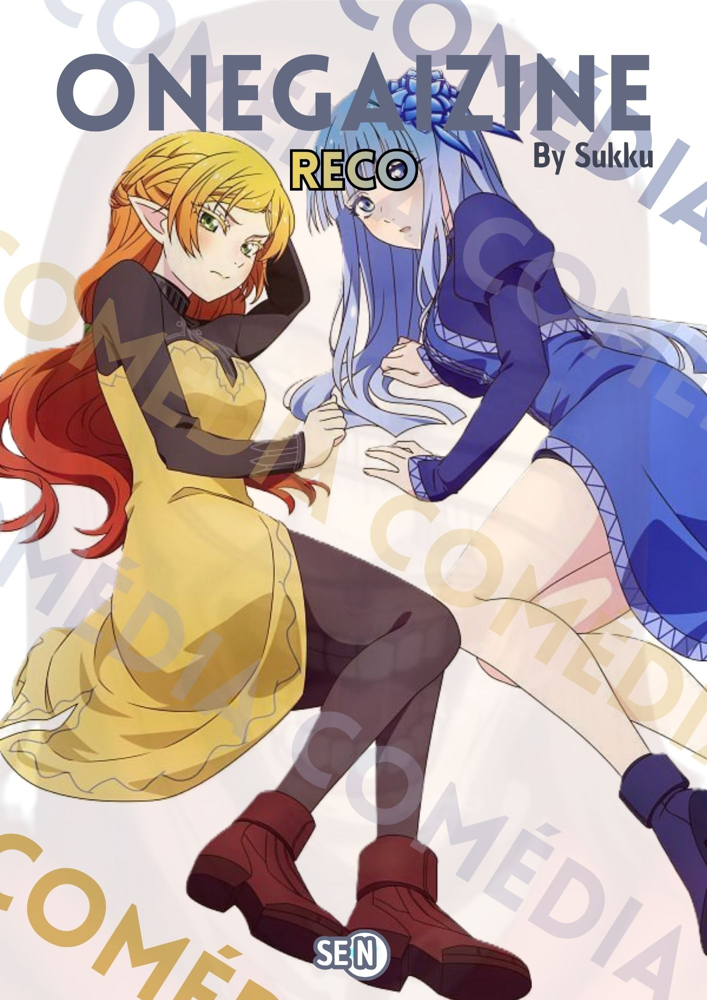
RECO: Edição 01
Primeira revista da edição RECO sobre os animes: How I Attended an All-Guy's Mixer, Tamon-kun ima docchi?!, Isekai Ojisan.
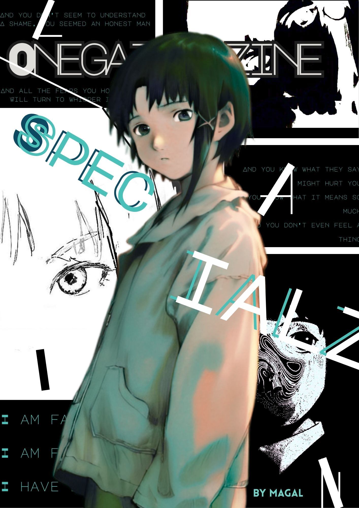
Specialz: Serial Experiments Lain (English)
The year was 1945, the Second World War was almost at its end. And the world saw, for the first time, the most powerful weapon of mankind—a weapon so destructive that it could erase a city in a matter of seconds. Families, animals, histories, all that was once full of life were wiped out by the power of technology.
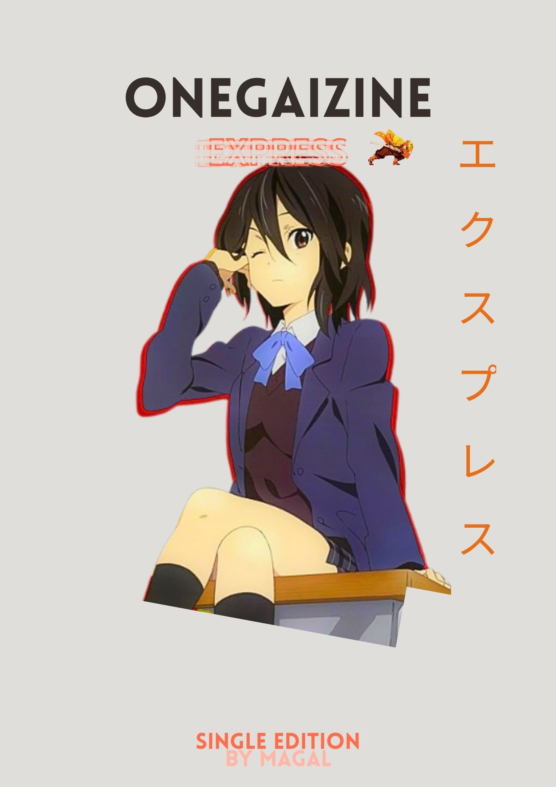
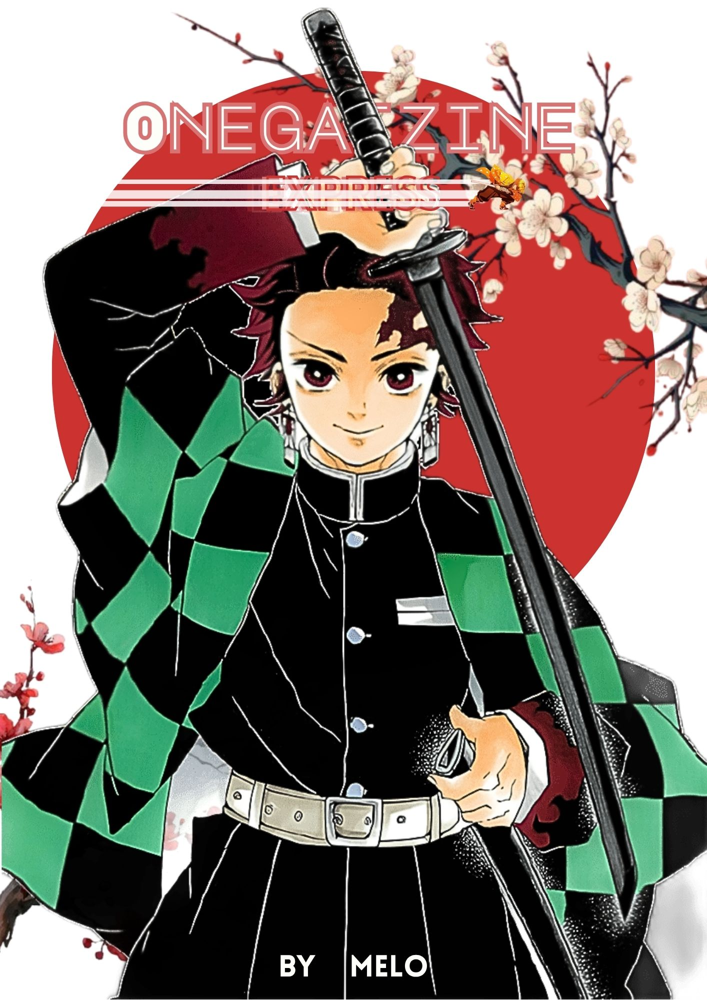
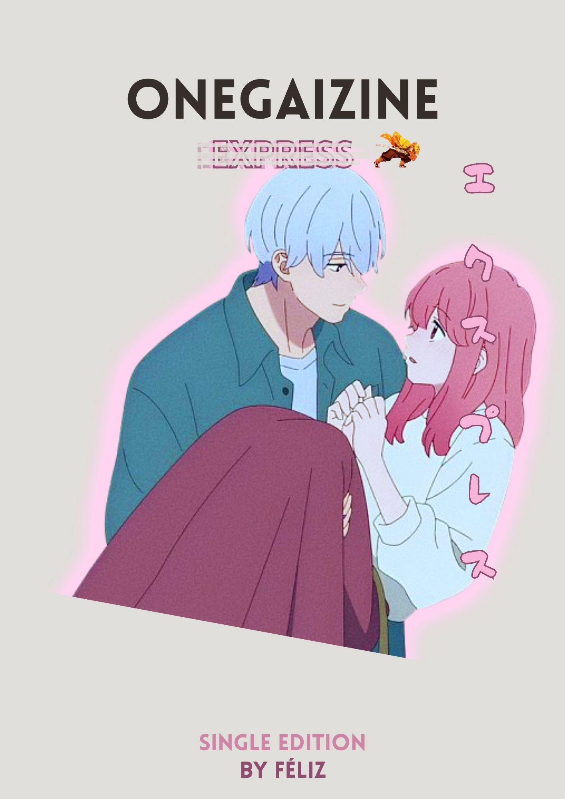
A Sign of Affection
O anime Yubisaki to Renren (A Sign of Affection em inglês) retrata a vida de Yuki, uma estudante universitária surda, que durante um imprevisto acaba conhecendo o veterano de sua faculdade, Itsuomi, naquele momento se iniciou uma trama que supera qualquer dificuldade.
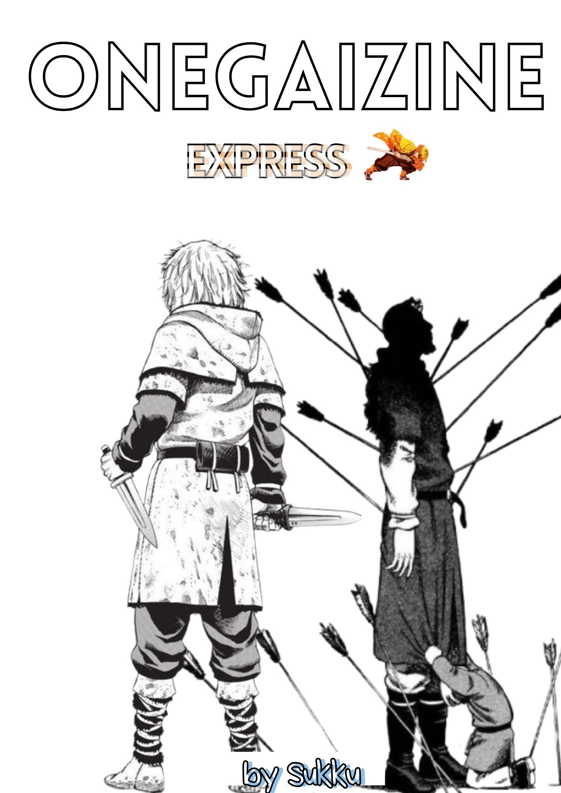
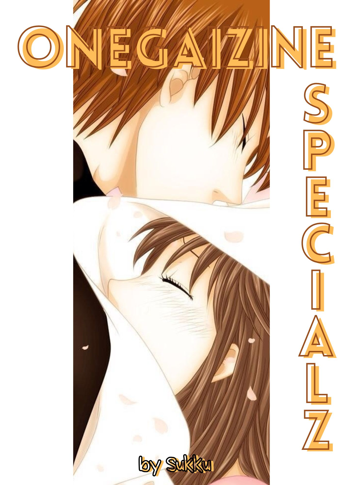
Fruits Basket
O que será dito sobre o anime Fruits Basket não é nada menos que um tipo de ensaio, como forma de, não entender, mas questionar conceitos já existentes e desabar as paredes da ignorância.
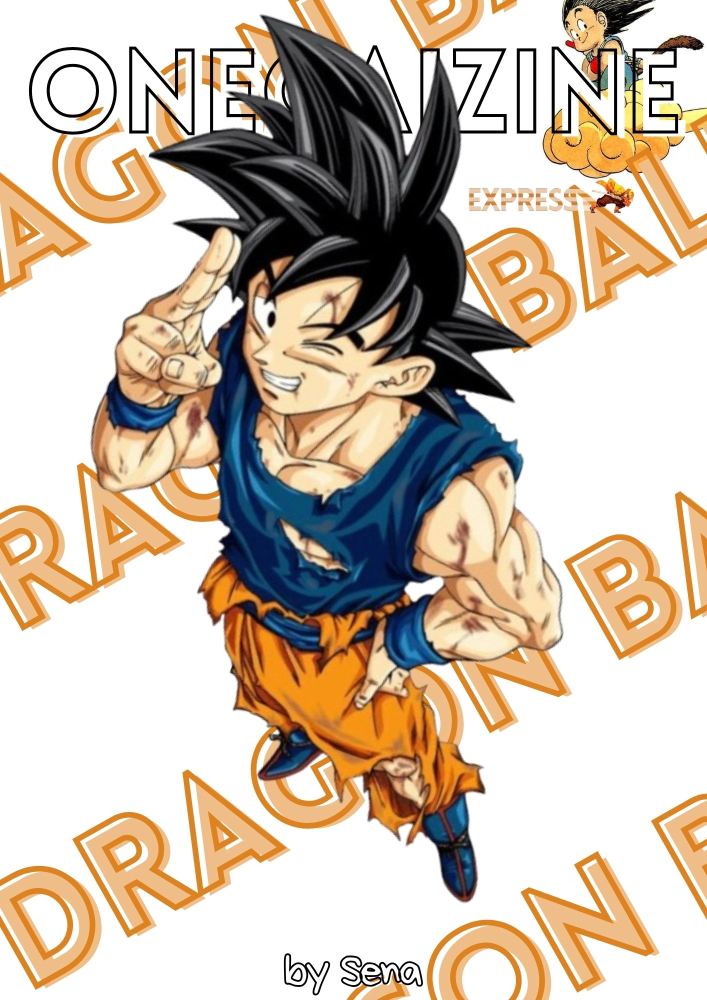
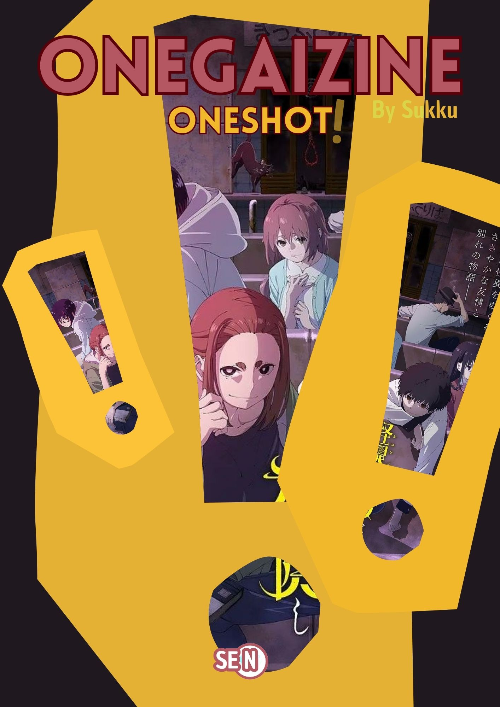
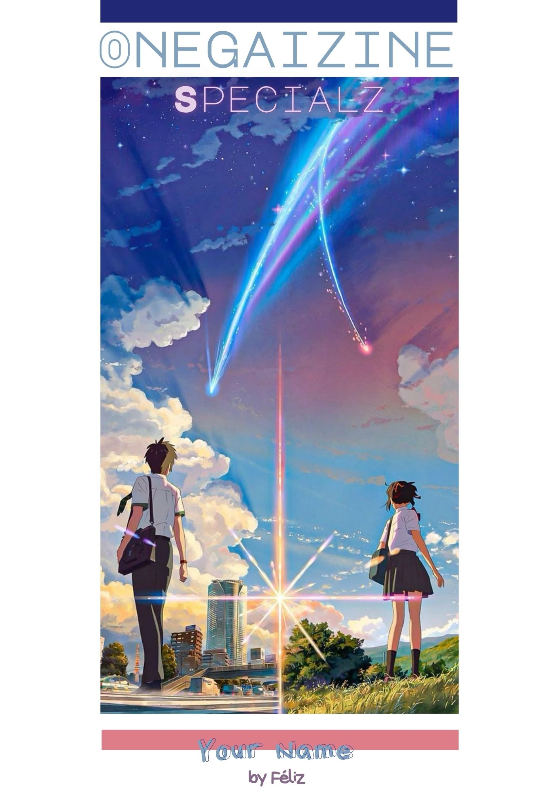
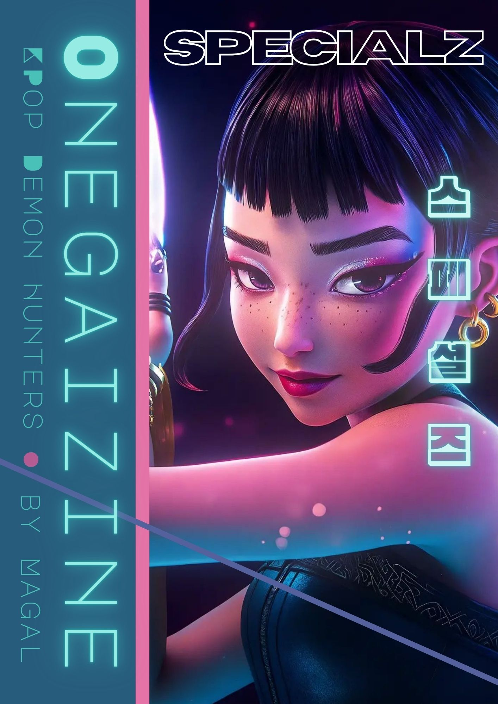
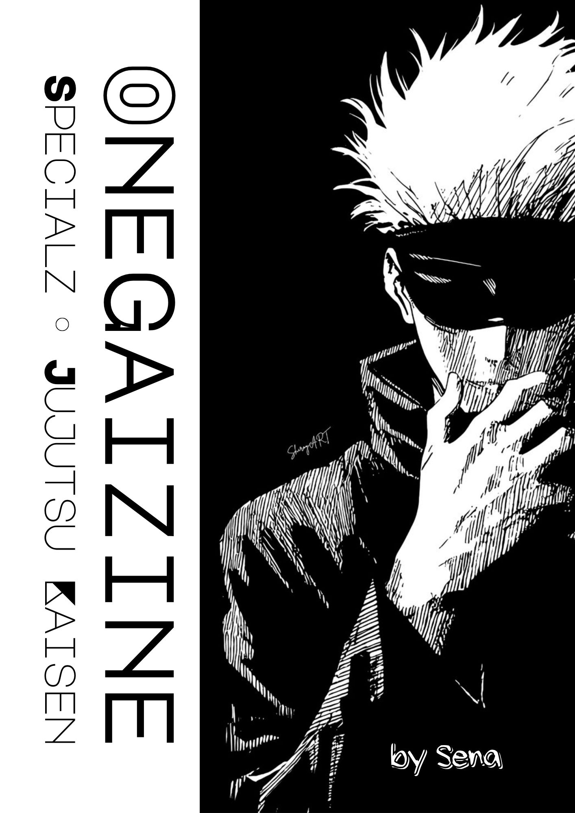
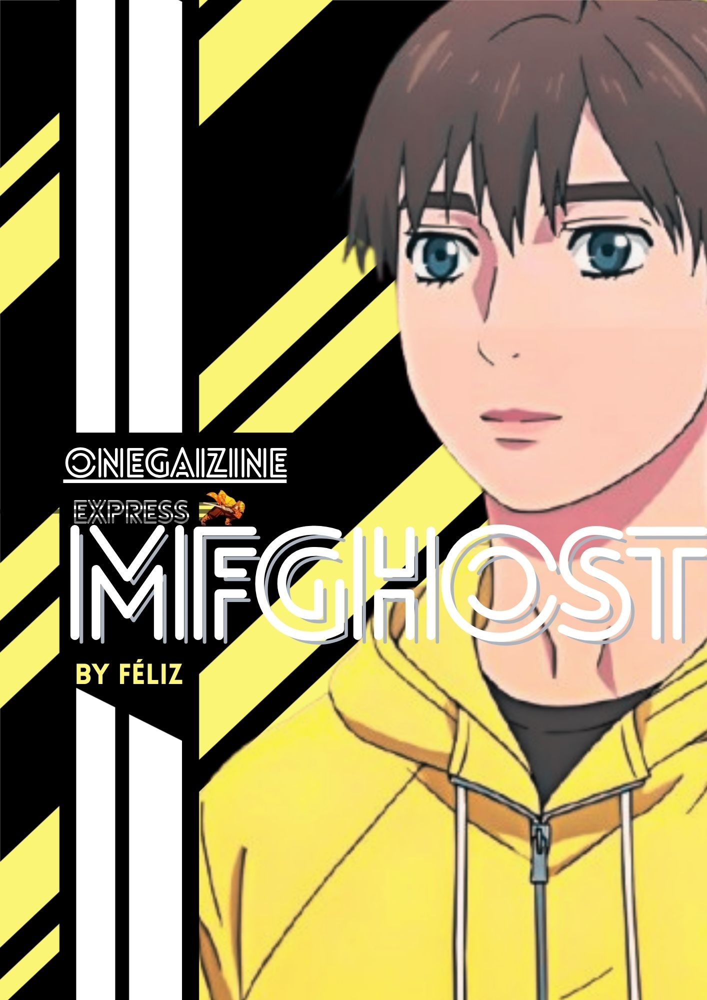